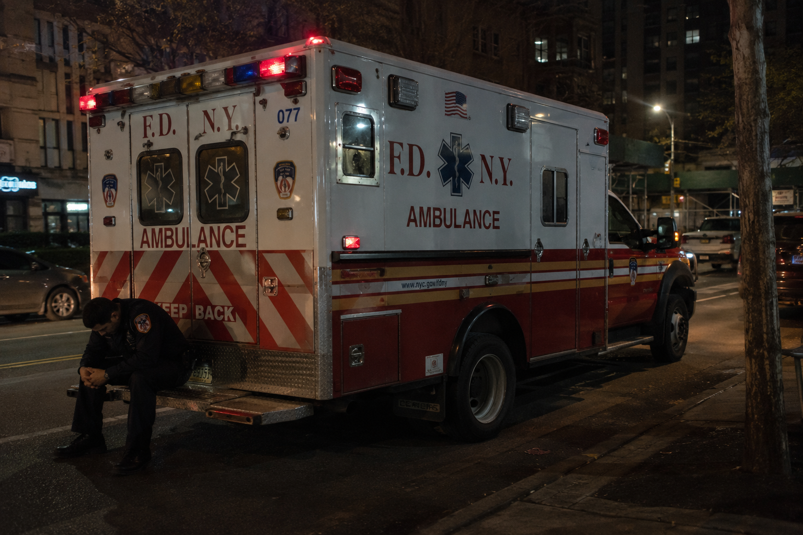

NextLine Health supports first responders by helping them stay connected to behavioral health resources, understand next steps, and remain engaged after high-stress events, referrals, or critical incidents.
The emergency ends for everyone else. For the responder, it can stay with them.

Firefighters, EMS personnel, paramedics, dispatchers, and emergency response teams operate under repeated exposure to trauma, pressure, loss, and high-stakes decision-making. The impact is not always visible immediately, but it can accumulate quietly.
NextLine Health is designed to close the gap between stress exposure and sustained support. We provide a structured engagement layer that helps responders stay connected to resources, follow through on referrals, and receive human support before isolation becomes crisis.
Click each stage to see where support breaks down — and how NextLine responds.
After a fatality, violent incident, child-related call, overdose, fire, rescue, or repeated exposure to trauma, the official response may end quickly. But the psychological impact can continue long after the shift.
We create a follow-through layer after high-stress events so responders are not left to process everything alone.
EAP numbers, peer support contacts, or clinical referrals may be available, but stigma, exhaustion, scheduling, and uncertainty can stop people from taking the next step.
We help responders understand options, reduce friction, and make the next step feel clear and manageable.
A referral does not guarantee connection. Without reminders, check-ins, and accountability, support can remain theoretical instead of becoming real care.
We provide structured outreach, appointment support, and human follow-through so resources turn into action.
First responder stress is cumulative. One conversation after one incident is not enough when the work keeps exposing people to pressure and trauma.
We keep engagement active over time, helping organizations support responders before problems become emergencies.
Resilience is not just personal toughness. It requires systems, leadership support, practical access, and consistent follow-through.
NextLine helps organizations build a practical support layer around responders, improving continuity, trust, and engagement.
NextLine helps departments, agencies, and responder-serving organizations strengthen engagement after critical incidents, referrals, and periods of operational stress.
Structured check-ins after high-stress calls, critical incidents, or difficult shifts.
We help ensure that responders are contacted after difficult events, not forgotten once the incident report is complete.
Help understanding behavioral health options, peer support, EAP, and community resources.
We make resources easier to act on by helping responders understand what is available and what the next step looks like.
Reminders, accountability, and check-ins that turn referrals into real engagement.
We stay connected between the moment someone is referred and the moment support actually begins.
Documentation and engagement tracking for organizations that need stronger support infrastructure.
We help organizations understand whether support is being offered, accepted, followed through, and sustained.
We are building an innovative support model that sits between crisis response, peer support, EAP, and clinical care — helping people stay connected before the situation escalates.
Support does not stop after a resource list or referral. We help keep people engaged.
Language and outreach designed for first responder culture, not generic wellness messaging.
Human check-ins help break the silence that often follows critical incidents and burnout.
We help connect scattered resources into a clearer pathway of engagement and care.
The 988 Suicide & Crisis Lifeline provides immediate support. In an emergency, call 911.
If your department, agency, or organization serves first responders and needs stronger engagement, navigation, and follow-through support, we are ready to help.